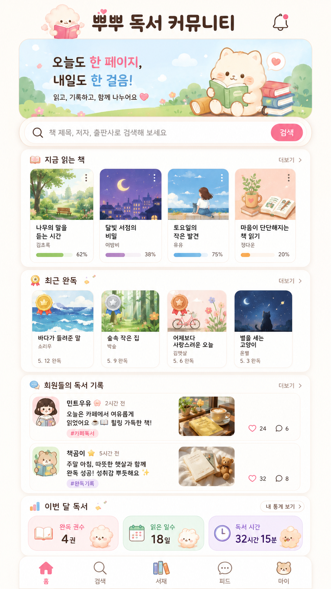

{kind=link}
0
시작 준비
Windows Codex 설정
설정만 확인합니다. 실제 앱 생성은 1단계에서 시작합니다.
👤 가입 필요없음
🧩 설치/연결없음
개인이 해야 하는 것
- Windows Codex 실행
- 새 프로젝트 폴더 열기
- 모델: 5.4-mini
- Reasoning: Medium
- MCP/플러그인/웹검색은 처음에는 사용하지 않음
로컬 앱 → API → GitHub → Vercel → Supabase MCP → Kakao 로그인 순서로 진행합니다.

이미지 클릭해서 다운로드코드를 만들고 수정하는 AI 개발자
코드를 저장하는 문서고
웹사이트를 외부에 공개
데이터 저장·로그인·권한 관리
처음부터 모두 설치하지 않고, 필요한 순간에만 확인합니다.
| 단계 | 내용 | 가입 필요 | 설치/연결 |
|---|---|---|---|
| 0단계 | Windows Codex 설정 | 없음 | 없음 |
| 1단계 | 로컬 MVP 만들기 | 없음 | Node.js LTS, npm — 필요한 순간에만 설치 |
| 2단계 | 도서검색 API 붙이기 | 없음 | 없음 |
| 3단계 | GitHub 가입 후 commit & push | GitHub 가입 필요 | Git for Windows — 필요한 순간에만 설치 |
| 4단계 | Vercel 가입 후 외부 배포 | Vercel 가입 필요 | 없음 |
| 5단계 | Supabase 가입 후 MCP 연결 | Supabase 가입 필요 | Supabase MCP, @supabase/supabase-js — 필요한 순간에만 연결/설치 |
| 6단계 | Vercel 환경변수 추가 후 재배포 | 추가 가입 없음 | 없음 |
| 7단계 | Kakao Developers 준비 후 카카오 로그인 | Kakao Developers 사용 필요 | 없음 |
설정만 확인합니다. 실제 앱 생성은 1단계에서 시작합니다.
/goal
무료 플랜 Windows Codex 실습용으로 "독서 커뮤니티" MVP를 만들어줘.
중요:
처음부터 모든 프로그램을 설치하지 말고,
이번 단계에 필요한 Node.js와 npm만 확인해줘.
설치가 필요할 때만 나에게 알려주고, 내 승인 후 설치를 시도해줘.
모델 기준:
- 5.4-mini
- Reasoning Medium
- MCP/플러그인/웹검색 사용 금지
- 새 라이브러리는 꼭 필요할 때만
- 마지막에 npm run build 1번만 실행
먼저 확인할 것:
1. node --version
2. npm --version
3. 현재 작업 폴더 위치
Node.js 또는 npm이 없을 경우:
1. 아직 프로젝트를 만들지 말고 멈춰줘.
2. Node.js LTS 설치가 필요하다고 알려줘.
3. 설치 명령을 먼저 보여줘.
4. 내가 승인하면 winget으로 설치를 시도해줘.
설치 명령 예시:
winget install OpenJS.NodeJS.LTS
설치 주의:
- 강제로 설치하지 말 것
- 관리자 권한 팝업은 내가 직접 승인
- 설치 후 Codex 또는 PowerShell 재시작이 필요하면 알려줄 것
- 설치 로그는 길게 설명하지 말고 성공/실패만 요약
- 삭제 작업 금지
Node.js와 npm이 정상 확인되면 진행할 것:
목표:
내 컴퓨터에서 실행해 볼 수 있는 독서 공유 및 책 읽기 프로그램을 만든다.
기술:
- React + Vite + JavaScript
- 현재 폴더가 비어 있으면 Vite React 프로젝트 생성
- 기존 프로젝트가 있으면 필요한 파일만 수정
기능:
1. 모바일에서 보기 좋은 독서 커뮤니티 화면
2. 사이트 제목: 독서 커뮤니티
3. 읽는 중 책 목록
4. 완독 책 목록
5. 책 직접 추가
6. 책 삭제
7. 진행률 표시
8. 책 제목/저자 내부 검색
9. localStorage 저장
10. 새로고침 후 데이터 유지
11. 기본 샘플 책 5권
12. README.md 작성
주의:
- Supabase는 아직 하지 않는다.
- GitHub는 아직 하지 않는다.
- Kakao 로그인은 아직 하지 않는다.
- .env.local은 만들지 않는다.
- 개인정보 예시는 넣지 않는다.
작업 후:
1. 변경 파일 목록
2. 로컬 실행 주소
3. 브라우저 확인 방법
4. npm run build 결과
5. 설치한 것이 있다면 무엇을 설치했는지 요약/goal
현재 독서 커뮤니티 앱에 Open Library 도서검색 API 기능을 붙여줘.
현재 상태:
- React + Vite + JavaScript 앱
- localStorage 기반 독서 커뮤니티 MVP 작동 중
- 직접 책 추가/삭제 가능
중요:
이번 단계에서는 추가 프로그램을 설치하지 않는다.
Node.js와 npm이 이미 있는지 간단히 확인만 하고,
새 라이브러리는 설치하지 않는다.
사용할 API:
https://openlibrary.org/search.json?q=검색어&limit=10
조건:
- 모델 5.4-mini
- Reasoning Medium
- MCP/플러그인/웹검색 사용 금지
- 새 라이브러리 설치 금지
- Supabase는 아직 하지 않음
- 마지막에 npm run build 1번만 실행
기능:
1. 도서 검색 영역 추가
2. 검색어 입력창과 검색 버튼
3. 검색어가 비어 있으면 API 호출하지 않기
4. 검색 중 상태 표시
5. 검색 결과 없음 표시
6. 오류 발생 시 안내 표시
7. 결과 카드에 제목, 저자, 첫 출간 연도, ISBN 표시
8. cover_i가 있으면 표지 이미지 표시
9. 표지 주소는 https://covers.openlibrary.org/b/id/{cover_i}-M.jpg 사용
10. "내 서재에 추가" 버튼
11. 추가한 책은 기존 책 목록과 localStorage에 저장
12. 새로고침 후 유지
가능하면:
- API 호출 코드는 src/lib/bookSearchApi.js로 분리
- 기존 디자인은 크게 바꾸지 않기
작업 후:
1. 변경 파일 목록
2. 테스트 방법
3. npm run build 결과/goal
현재 독서 커뮤니티 프로젝트를 GitHub에 commit & push까지 진행해줘.
GitHub 저장소 주소:
여기에_내_GitHub_repository_URL_붙여넣기
현재 상태:
1. 로컬 MVP가 작동한다.
2. Open Library 도서검색 API가 작동한다.
3. 아직 Supabase 연결은 하지 않았다.
4. Vercel 배포를 위해 GitHub에 먼저 저장하고 싶다.
중요:
GitHub push는 플러그인이 아니라 로컬 git 명령으로 진행한다.
이번 단계에서만 Git 설치 여부를 확인한다.
먼저 확인할 것:
1. git --version
2. git status
3. 현재 폴더가 git repository인지
Git이 없을 경우:
1. 아직 commit/push를 하지 말고 멈춰줘.
2. Git for Windows 설치가 필요하다고 알려줘.
3. 설치 명령을 먼저 보여줘.
4. 내가 승인하면 winget으로 설치를 시도해줘.
설치 명령 예시:
winget install Git.Git
설치 주의:
- 강제로 설치하지 말 것
- 관리자 권한 팝업은 내가 직접 승인
- 설치 후 Codex 또는 PowerShell 재시작이 필요하면 알려줄 것
- 설치 로그는 길게 설명하지 말고 성공/실패만 요약
- 삭제 작업 금지
Git이 정상 확인되면 진행할 것:
반드시 확인:
1. git status 확인
2. .gitignore 확인
3. .env.local 제외
4. node_modules 제외
5. dist 제외
6. API key, service_role key, secret key가 커밋되지 않게 확인
7. README.md 업데이트
8. PROJECT_CONTEXT.md 작성 또는 업데이트
9. TODO_NEXT.md 작성 또는 업데이트
10. AGENTS.md 작성 또는 업데이트
실행:
1. npm run build
2. git init이 안 되어 있으면 초기화
3. remote origin 확인
4. origin이 없으면 내가 제공한 GitHub URL로 설정
5. git add
6. git commit
7. git push
커밋 메시지:
complete reading community local mvp and book search api
조건:
- 모델 5.4-mini
- Reasoning Medium
- GitHub MCP/Plugin 사용하지 않음
- 불필요한 리팩터링 금지
작업 후:
1. commit 성공 여부
2. push 성공 여부
3. GitHub repo 주소
4. 제외된 보안 파일
5. 설치한 것이 있다면 무엇을 설치했는지 요약
6. 다음 단계 Vercel 배포 안내/goal
현재 GitHub에 push된 독서 커뮤니티 프로젝트를 Vercel에 배포할 수 있게 준비해줘.
현재 상태:
1. React + Vite + JavaScript 앱이다.
2. GitHub에 push가 완료되어 있다.
3. 아직 Supabase 연결은 하지 않았다.
4. 먼저 Vercel 무료 배포 주소를 만들고 싶다.
중요:
이번 단계에서는 Vercel CLI, Vercel MCP, Vercel Plugin을 설치하지 않는다.
수강생이 Vercel 웹사이트에서 직접 배포하도록 안내한다.
목표:
1. Vercel에서 GitHub repo를 연결해 배포할 수 있게 안내
2. .vercel.app 공개 주소를 확보하게 안내
3. 커스텀 도메인이 있는 경우 연결 방법을 README에 정리
4. Supabase와 Kakao 로그인에서 이 공개 주소를 사용할 예정이라고 문서화
5. npm run build 실행
Codex가 할 일:
1. package.json의 build 명령어 확인
2. Vite 배포 설정 확인
3. README.md에 Vercel 배포 방법 추가
4. PROJECT_CONTEXT.md에 공개 주소 기록 항목 추가
5. TODO_NEXT.md에 Supabase Redirect URL로 Vercel 주소를 사용할 것이라고 기록
6. npm run build 실행
Vercel에서 사용자가 할 일도 초보자용으로 정리:
1. vercel.com 가입
2. Continue with GitHub
3. Add New Project
4. GitHub repository 선택
5. Framework Preset: Vite 확인
6. Deploy 클릭
7. .vercel.app 주소 복사
조건:
- 모델 5.4-mini
- Reasoning Medium
- Vercel MCP 사용 금지
- Vercel Plugin 사용 금지
- Supabase 연결은 아직 하지 않음
- Kakao 로그인은 아직 하지 않음
작업 후:
1. Vercel 배포 전 체크 결과
2. 사용자가 Vercel에서 클릭할 순서
3. 공개 URL을 어디에 기록해야 하는지
4. npm run build 결과/goal
Supabase MCP를 사용해서 현재 독서 커뮤니티 앱에 Supabase 저장 기능을 연결해줘.
현재 상태:
1. React + Vite + JavaScript 앱이다.
2. 로컬 MVP가 작동한다.
3. Open Library 도서검색 API가 작동한다.
4. GitHub에 push되어 있다.
5. Vercel 배포 주소가 있다.
Vercel 공개 주소:
여기에_Vercel_배포_URL_붙여넣기
중요:
이번 단계에서만 Supabase MCP 연결 여부를 확인한다.
처음부터 MCP를 설치하지 않고, Supabase 저장 기능이 필요한 지금만 확인한다.
MCP 사용 조건:
1. Supabase MCP가 이미 연결되어 있으면 사용한다.
2. 연결되어 있지 않으면 "Supabase MCP 연결 필요"라고 알려준다.
3. 가능하면 Windows Codex에서 Supabase MCP를 연결하는 방법을 초보자용으로 안내한다.
4. 연결 또는 설치가 필요하면 명령이나 절차를 먼저 보여주고 내 승인을 받아라.
5. MCP 연결이 안 되면 수동 방식으로 Project URL과 Publishable key를 입력하는 대체 방법을 안내한다.
Supabase MCP 연결 안내에 포함할 것:
1. Supabase 계정 로그인 필요
2. 강의용 프로젝트 선택
3. 운영 DB 연결 금지
4. 위험한 SQL 실행 전 승인 필요
5. 테이블 삭제, 전체 데이터 삭제 금지
6. service_role key 사용 금지
Supabase에서 할 일:
1. 연결된 Supabase 프로젝트 확인
2. 프로젝트 URL 확인
3. publishable key 또는 anon public key 확인
4. books 테이블 존재 여부 확인
5. 없으면 books 테이블 생성용 SQL 또는 migration 작성
6. RLS 활성화
7. 사용자별로 자기 책만 읽고/추가/수정/삭제할 수 있는 policy 적용
8. Anonymous Sign-in 활성화 여부 확인
9. 필요한 Redirect URL 안내
- http://localhost:5173
- 위에 입력한 Vercel 공개 주소
앱 코드에서 필요한 설치:
1. @supabase/supabase-js가 설치되어 있는지 확인
2. 없으면 설치 명령을 먼저 보여주고 내 승인을 받아라
3. 승인 후 설치한다
설치 명령:
npm install @supabase/supabase-js
앱 코드에서 할 일:
1. .env.local 생성 또는 업데이트
2. .env.example에는 실제 값 없이 예시만 작성
3. .gitignore에 .env.local 포함 확인
4. src/lib/supabase.js 생성 또는 수정
5. VITE_SUPABASE_URL 사용
6. VITE_SUPABASE_ANON_KEY 사용
7. VITE_PUBLIC_SITE_URL에 Vercel 공개 주소 사용
8. 앱 시작 시 Anonymous Sign-in
9. books 테이블에서 목록 불러오기
10. 책 추가 시 Supabase insert
11. 책 삭제 시 Supabase delete
12. Supabase 실패 시 localStorage fallback
13. 저장/오류/로딩 메시지 표시
14. 공유 주소 복사 버튼 추가
Vercel 환경변수:
README.md에 아래 값을 Vercel Project Settings → Environment Variables에 넣어야 한다고 기록한다.
- VITE_SUPABASE_URL
- VITE_SUPABASE_ANON_KEY
- VITE_PUBLIC_SITE_URL
보안:
1. service_role key 사용 금지
2. secret key 사용 금지
3. database password 사용 금지
4. .env.local GitHub 업로드 금지
5. 실제 key 값은 보고서에 그대로 출력하지 않기
6. 운영 DB 작업 금지
조건:
- 모델 5.4-mini
- Reasoning Medium
- 오류가 나면 High로 바꿔 다시 시도 가능
- 불필요한 리팩터링 금지
- 마지막에 npm run build 1번 실행
작업 후:
1. Supabase MCP 연결 확인 여부
2. MCP를 설치/연결했다면 어떤 방식으로 했는지 요약
3. Supabase 테이블과 RLS policy 요약
4. 변경 파일 목록
5. .env.local 보안 확인
6. Vercel 환경변수 목록
7. Supabase Redirect URL 목록
8. 브라우저 테스트 순서
9. npm run build 결과/goal
Supabase 연결 후 Vercel에서도 정상 작동하도록 환경변수 설정과 재배포 방법을 안내해줘.
현재 상태:
1. 로컬에서는 Supabase 연결이 되었거나 연결 준비가 되었다.
2. GitHub에 push되어 있다.
3. Vercel 배포 주소가 있다.
4. Vercel에 환경변수를 추가해야 한다.
중요:
이번 단계에서는 Vercel CLI나 MCP를 설치하지 않는다.
Vercel 웹사이트에서 직접 설정하도록 안내한다.
Vercel에 추가할 환경변수:
- VITE_SUPABASE_URL
- VITE_SUPABASE_ANON_KEY
- VITE_PUBLIC_SITE_URL
Codex가 할 일:
1. README.md에 Vercel 환경변수 추가 방법 정리
2. PROJECT_CONTEXT.md에 배포 주소와 환경변수 필요성 정리
3. .env.example이 위 3개 변수를 포함하는지 확인
4. .env.local이 GitHub에 올라가지 않도록 .gitignore 확인
5. npm run build 실행
사용자가 Vercel에서 할 일:
1. Vercel Dashboard 접속
2. 프로젝트 선택
3. Settings 클릭
4. Environment Variables 클릭
5. 위 3개 값 입력
6. Save
7. Deployments에서 Redeploy
8. 공개 주소에서 책 저장/불러오기 테스트
조건:
- 모델 5.4-mini
- Reasoning Medium
- 설치 작업 금지
- Vercel CLI 사용 금지
- Vercel MCP 사용 금지
작업 후:
1. 사용자가 해야 할 Vercel 설정 순서
2. 환경변수 목록
3. 재배포 후 테스트 방법
4. npm run build 결과/goal
현재 독서 커뮤니티 앱에 카카오 로그인을 붙여줘.
방식:
Kakao JavaScript SDK 직접 구현이 아니라,
Supabase Auth의 Kakao provider를 사용한다.
중요:
이번 단계에서 Kakao SDK를 새로 설치하지 않는다.
Supabase Auth의 signInWithOAuth 기능을 사용한다.
추가 패키지가 꼭 필요하다고 판단되면 설치하지 말고 먼저 나에게 이유를 설명해줘.
현재 상태:
1. React + Vite + JavaScript 앱이다.
2. Supabase 연결이 되어 있다.
3. Vercel 공개 주소가 있다.
4. books 테이블은 user_id 기준으로 저장된다.
수강생이 미리 설정해야 하는 것:
1. Kakao Developers에서 앱 생성
2. Web 플랫폼 등록
3. 사이트 도메인 등록
4. Kakao Login 활성화
5. REST API key 확인
6. Client Secret 생성
7. Supabase Authentication Providers에서 Kakao 활성화
8. Supabase Callback URL을 Kakao Redirect URI에 등록
9. Supabase Redirect URL에 localhost와 Vercel 주소 등록
구현할 기능:
1. 카카오로 로그인 버튼
2. supabase.auth.signInWithOAuth 사용
3. provider는 kakao
4. 로그인 후 session 확인
5. 사용자 정보 표시
6. 로그아웃 버튼
7. 로그인한 user_id로 책 저장
8. 로그인 전 안내 문구
9. 기존 localStorage fallback 유지
10. 로그인 상태 변경 시 책 목록 다시 불러오기
11. npm run build 실행
주의:
- Kakao REST API key와 Client Secret은 React 코드에 넣지 않는다.
- Kakao Client Secret은 Supabase Dashboard에만 넣는다.
- service_role key는 절대 사용하지 않는다.
- 리다이렉트 오류가 나면 Kakao Redirect URI와 Supabase Redirect URL을 확인하도록 안내한다.
- 무료 플랜 실습이므로 불필요한 리팩터링 금지
작업 후:
1. 추가/수정 파일
2. 카카오 로그인 버튼 위치
3. Supabase Auth 흐름
4. Kakao Developers 확인 항목
5. Supabase Dashboard 확인 항목
6. npm run build 결과
7. 흔한 오류와 해결 방법